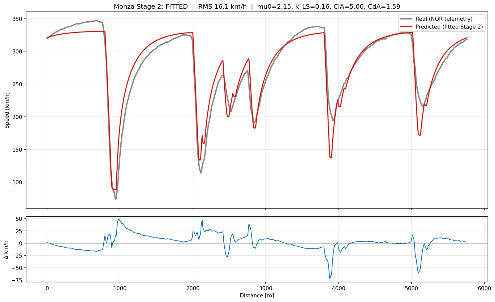

What it does
The simulator solves a lap quasi-steady-state: the car is assumed to sit at the limit of the available grip at every point on the track, and the lap is built by working forwards and backwards through the speed constraints that follow. It is the standard model class for this kind of tool, and the interesting question is never whether it produces a lap time, but how far you can trust the one it produces.
Why lap time is the wrong number to report
The first version matched lap time to within 1.25%. That figure flattered the model. A lap time is an integral, and errors of opposite sign along the lap cancel inside it, so a model can be wrong nearly everywhere and still land close on the total.
Taking RMS error across the full speed trace as the honest measure instead changes the picture entirely, and it is the number the rest of the work is judged against.
RMS error across the full speed trace, not lap time. Adding a load-sensitive tyre model and a Nelder–Mead correlation fitter brought it from 26.1 down to 16.1 km/h, a 38% reduction.
Correlation against real telemetry
Telemetry for the 2024 Italian Grand Prix pole lap was pulled through FastF1 and used as the reference. Two changes did the work:
- A load-sensitive tyre model, so grip falls off with vertical load rather than staying constant
- A Nelder–Mead correlation fitter, tuning the free model parameters against the measured speed trace rather than by hand



Chasing the residual
The 16.1 km/h that remains is the more interesting part. Rather than tuning further until the number looked better, I established four independent ways of showing the residual is a limit of the quasi-steady-state model class itself, not a data problem or a bug. That distinction matters: a residual you can attribute is a known boundary on the tool, and a residual you cannot is a reason to distrust everything it says.
The optimiser
Wrapped in an optimiser, the model independently recovers the correct real-world setup direction per circuit from track geometry alone: a trimmed wing and long gears at Monza, a loaded wing at the Hungaroring. Nothing about either car setup is given to it. It is a useful check, because the two circuits sit at opposite ends of the downforce range and the right answers are already known.
Abstract
I built a quasi-steady-state (QSS) lap-time simulator in Python and validated it against real Formula 1 telemetry, matching lap time to within 1.25%, though RMS error across the full speed trace, at 16.1 km/h, is the honest measure. I then combined it with an optimiser which, given only a circuit's geometry, independently chooses the right aerodynamic setup for that track. Monza and the Hungaroring were optimised for comparison.